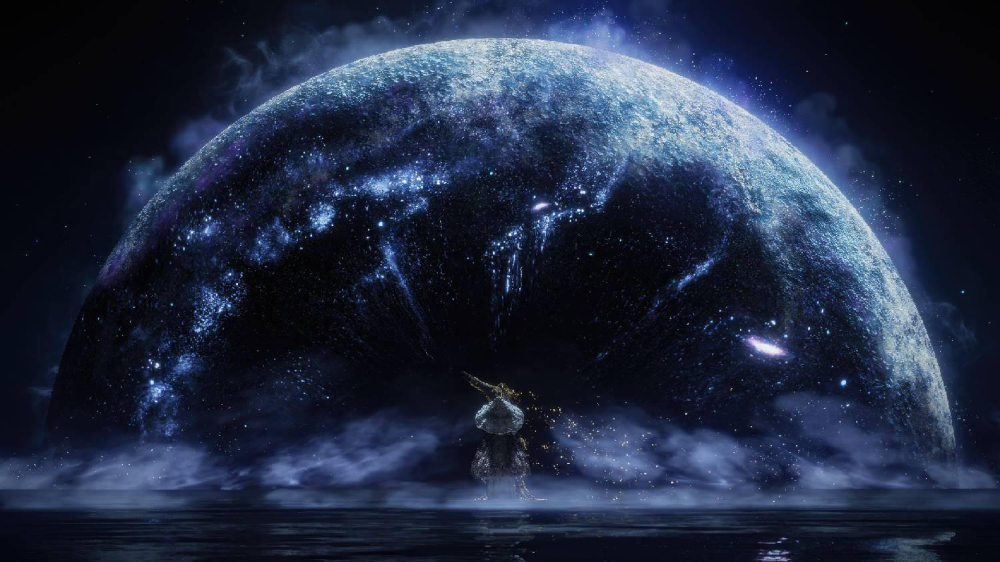
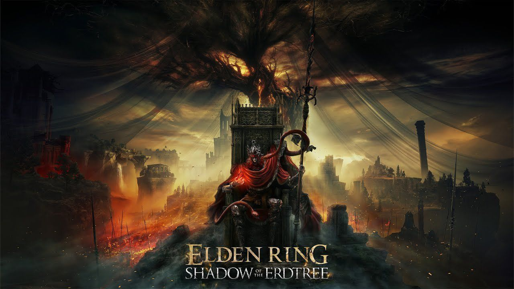
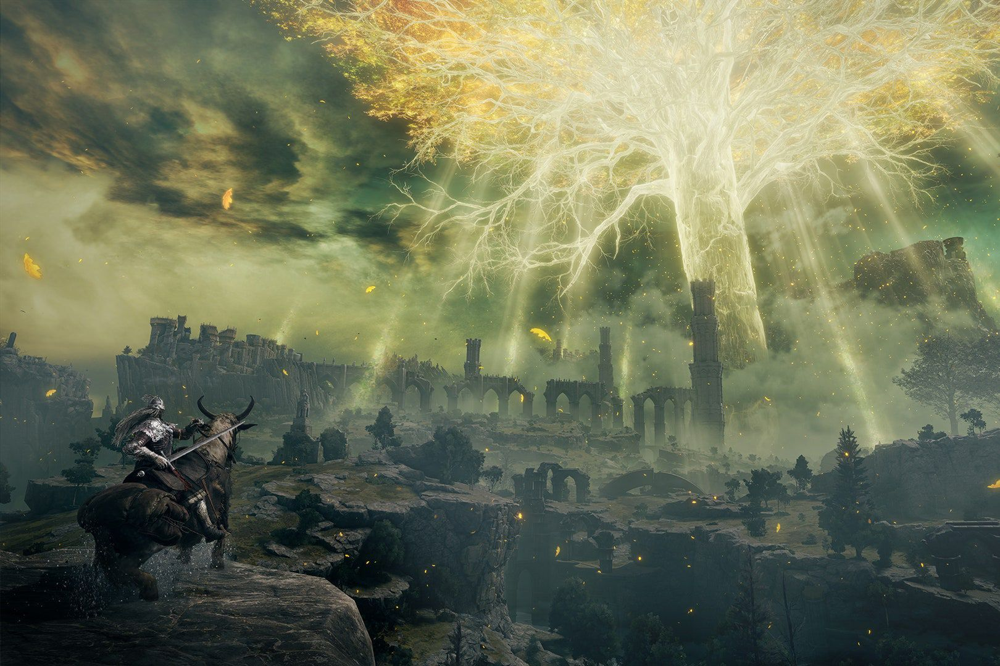

Elden Ring از نظر بصری یکی از چشمگیرترین بازیهای نقشآفرینی است.
هر منطقه با رنگ، نور، معماری و طراحی دشمنان،
حس متفاوتی به بازیکن منتقل میکند.
یک منطقه ممکن است حس شکوه و قدرت داشته باشد،
درحالیکه منطقهای دیگر با سکوت و خرابی،
احساس ناامیدی و فروپاشی را به وجود آورد.
معماری محیطها نیز فقط برای زیبایی طراحی نشده است.
قلعهها، معابد، شهرها و دخمهها معمولاً با تاریخ و ساختار جهان ارتباط دارند.
بازیکن از روی شکل بناها میتواند درباره تمدنهایی که زمانی در آنجا زندگی
میکردند، برداشتهایی به دست آورد.
موسیقی بازی نیز در زمانهای مناسب وارد میشود و فضا را تقویت میکند.
در لحظات اکتشاف، سکوت و صدای محیط اهمیت بیشتری پیدا میکند،
اما هنگام ورود به یک نبرد بزرگ، موسیقی بهشکل قدرتمندی
وزن و اهمیت آن لحظه را افزایش میدهد.
ترکیب این عناصر، تجربهای میسازد که فقط با دیدن تصاویر
یا خواندن خلاصه داستان قابل درک نیست.
Elden Ring باید تجربه شود؛ باید در مسیرهای ناشناخته آن قدم زد،
در برابر دشمنان شکست خورد و با کشف یک منطقه مخفی،
احساس شگفتی کرد.

یکی از ویژگیهای متفاوت بازی این است که شکست خوردن
لزوماً احساس ناامیدی ایجاد نمیکند.
البته شکست در برابر یک باس میتواند خشمگینکننده باشد،
اما معمولاً همزمان اطلاعات ارزشمندی نیز به بازیکن میدهد.
شما متوجه میشوید که کدام حمله قابل پیشبینی است،
در چه لحظهای باید جاخالی دهید،
چه فاصلهای امنتر است و کدام توانایی دشمن
میتواند برایتان خطرناک باشد.
هر تلاش، حتی اگر به پیروزی منتهی نشود،
بخشی از مسیر یادگیری است. بازیکن کمکم از فردی
که در برابر دشمن هیچ شانسی نداشت،
به مبارزی تبدیل میشود که حرکات حریف را میشناسد
و برای هر مرحله از مبارزه برنامه دارد.
این روند، یکی از رضایتبخشترین چرخههای طراحی بازی را ایجاد میکند:
شکست، یادگیری، تغییر استراتژی و در نهایت پیروزی.
وقتی بازیکن پس از چند تلاش موفق میشود،
احساس میکند واقعاً خودش پیشرفت کرده است.
Shadow of the Erdtree؛ بازگشتی شکوهمند به جهان بازی

اگر Elden Ring یک شاهکار بزرگ بود، بستهالحاقی
Shadow of the Erdtree
نشان داد که این جهان هنوز ظرفیت عظیمی برای گسترش دارد.
این بستهالحاقی یک محتوای جانبی ساده یا مجموعهای از مراحل اضافی نیست؛
بلکه تجربهای بزرگ، مستقل و عمیق است که از نظر طراحی،
داستان و میزان چالش، در سطحی بسیار بالا قرار میگیرد.
Shadow of the Erdtree بازیکن را به سرزمینی تازه میبرد؛
منطقهای که اگرچه با جهان اصلی ارتباط دارد،
اما هویت، ساختار و رمزورازهای مخصوص خودش را دارد.
این سرزمین در نگاه اول شاید کوچکتر از جهان اصلی به نظر برسد،
اما طراحی فشرده و چندلایه آن باعث میشود تقریباً هر مسیر،
هر صخره و هر خرابه ارزش بررسی داشته باشد.
یکی از نکات شگفتانگیز این بستهالحاقی،
ارتفاع و عمق بسیار زیاد محیطهاست.
ممکن است یک مکان از فاصلهای نزدیک دیده شود،
اما مسیر رسیدن به آن از میان غارها،
درهها، ساختمانهای پیچیده و گذرگاههای مخفی عبور کند.
همین طراحی عمودی باعث شده اکتشاف در Shadow of the Erdtree
حتی بیشتر از بازی اصلی حس ماجراجویی داشته باشد.
بازیکن مرتب با مسیرهایی روبهرو میشود که در نگاه اول
غیرقابل دسترس به نظر میرسند، اما با کمی دقت،
راهی پنهان برای رسیدن به آنها پیدا میشود.
داستان Shadow of the Erdtree و رازهای سرزمین سایه
Shadow of the Erdtree از نظر روایت نیز اهمیت زیادی دارد.
این بستهالحاقی به بخشی از تاریخ جهان Elden Ring میپردازد
که پیش از این فقط بهصورت پراکنده و مبهم به آن اشاره شده بود.
بازیکن با سرزمینی روبهرو میشود که گذشتهای سنگین،
رازهایی پنهان و ارتباطی عمیق با اسطورههای اصلی بازی دارد.
داستان بستهالحاقی مانند بازی اصلی، همه پاسخها را بهصورت مستقیم ارائه نمیکند.
بازیکن باید از گفتوگوها، توضیحات آیتمها،
طراحی محیط و نشانههای پراکنده استفاده کند
تا تصویری کاملتر از اتفاقات به دست آورد.
سرزمین سایه فقط یک منطقه جدید نیست؛
بخشی از جهانی است که گذشته آن عمداً پنهان،
سرکوب یا از یادها حذف شده است.
همین ایده باعث میشود اکتشاف در DLC
فقط برای پیدا کردن آیتم و تجهیزات نباشد،
بلکه به تلاشی برای کشف حقیقت تبدیل شود.
شخصیتهای تازه نیز نقش مهمی در روایت دارند.
هرکدام از آنها هدف، گذشته و برداشت خاصی از وقایع دارند.
تعامل با این شخصیتها همیشه ساده و قابل پیشبینی نیست
و ممکن است تصمیمهای بازیکن بر مسیر برخی رویدادها تأثیر بگذارد.
Shadow of the Erdtree از نظر داستانی تلاش میکند
همان فضای رازآلود و چندلایه بازی اصلی را حفظ کند،
اما همزمان اطلاعات تازهای درباره جهان،
قدرتها و شخصیتهای مهم ارائه دهد.
باسهای DLC؛ چالشی حتی سنگینتر از بازی اصلی
یکی از مهمترین نقاط قوت Shadow of the Erdtree،
طراحی باسهای آن است. این دشمنان فقط برای افزایش مدت زمان بازی
در آن قرار نگرفتهاند؛ هرکدام طراحی بصری، موسیقی،
الگوی مبارزه و جایگاه داستانی مشخصی دارند.
بعضی از باسها بهدلیل سرعت بالا،
ترکیب حملات پیچیده و تغییر ناگهانی ریتم،
بازیکن را مجبور میکنند روش بازی خود را تغییر دهد.
در برخی نبردها، حفظ فاصله اهمیت دارد و در برخی دیگر،
نزدیک شدن و حمله در زمان مناسب تنها راه زنده ماندن است.
میزان چالش در Shadow of the Erdtree نیز قابل توجه است.
حتی بازیکنانی که در بازی اصلی تجربه زیادی به دست آوردهاند،
در این بستهالحاقی با دشمنانی روبهرو میشوند
که اشتباههای کوچک را بهسرعت مجازات میکنند.
البته دشواری بازی صرفاً برای سخت بودن طراحی نشده است.
باسها معمولاً الگوهای قابل یادگیری دارند و با مشاهده دقیق،
تمرین و انتخاب ساختار مناسب میتوان بر آنها غلبه کرد.
شکست در برابر این دشمنان، همان چرخه آشنای بازی را دوباره فعال میکند:
شناخت، تمرین، سازگاری و پیروزی.
پیروزی در برابر باسهای DLC از نظر احساسی نیز ارزشمند است،
زیرا بازیکن میداند با یک چالش معمولی روبهرو نبوده است.
هر پیروزی یادآور این است که مسیر دشوار،
در نهایت به نتیجهای شایسته منتهی شده است.
سلاحها و سبکهای مبارزه تازه
Shadow of the Erdtree فقط منطقه و دشمن جدید اضافه نمیکند؛
بلکه گزینههای تازهای برای ساخت شخصیت و مبارزه در اختیار بازیکن میگذارد.
این موضوع باعث میشود حتی بازیکنانی که صدها ساعت در جهان اصلی بازی کردهاند،
انگیزه کافی برای آزمایش سبکهای جدید داشته باشند.
سلاحهای تازه، مهارتهای متفاوت و روشهای جدید مبارزه،
تنوع سیستم نقشآفرینی را افزایش میدهند. بازیکن میتواند
ساختار قبلی خود را حفظ کند یا کاملاً از نو شروع کند
و با ترکیبی متفاوت به سراغ دشمنان برود.
این آزادی در انتخاب سبک مبارزه یکی از دلایلی است که
Elden Ring را برای بازیکنان مختلف جذاب میکند.
هرکس میتواند تجربهای شخصی از بازی داشته باشد؛
یک نفر با قدرت بدنی، دیگری با جادو،
و بازیکنی دیگر با سرعت، مخفیکاری یا حملات ویژه پیش برود.
سیستم پیشرفت و تعادل در Shadow of the Erdtree
برای حفظ تعادل در بستهالحاقی،
Shadow of the Erdtree از سیستم تقویتی مخصوصی استفاده میکند
که باعث میشود پیشرفت بازیکن در منطقه جدید معنا داشته باشد.
این سیستم، بازیکن را تشویق میکند که بهجای تکیه کامل بر قدرت قبلی،
محیط جدید را جستوجو و منابع مخصوص آن را پیدا کند.
به این ترتیب، حتی شخصیتی که در پایان بازی اصلی بسیار قدرتمند شده است،
در منطقه جدید همچنان با چالش روبهرو میشود.
این تصمیم طراحی باعث میشود DLC حس یک ماجراجویی واقعی داشته باشد،
نه مجموعهای از مراحل ساده که بازیکن بتواند بدون آمادگی از آنها عبور کند.
چرا Elden Ring یک شاهکار واقعی است؟
شاهکار بودن Elden Ring فقط به وسعت نقشه یا تعداد دشمنان آن مربوط نمیشود.
ارزش اصلی بازی در هماهنگی میان اجزای مختلف آن است.
جهان باز، طراحی مراحل، باسفایتها، موسیقی،
سیستم مبارزه، داستانگویی و آزادی عمل،
همگی در جهت ساختن یک تجربه منسجم حرکت میکنند.
Elden Ring به بازیکن احترام میگذارد.
بازی مسیر را بیش از اندازه توضیح نمیدهد،
همه رازها را آشکار نمیکند و برای هر تصمیم،
پاسخ آمادهای در اختیار مخاطب قرار نمیدهد.
در عوض، به او فرصت میدهد جهان را خودش بفهمد
و تجربهای شخصی از آن بسازد.
این عنوان همچنین نشان میدهد که دشواری و آزادی
میتوانند در کنار یکدیگر قرار بگیرند.
بازی سخت است، اما بازیکن را در یک مسیر ثابت زندانی نمیکند.
اگر با مانعی روبهرو شوید، راههای متعددی برای پیشرفت وجود دارد.
همین آزادی باعث میشود هر بازیکن داستان متفاوتی از Elden Ring داشته باشد.
یکی ممکن است ساعتها در دخمهها جستوجو کند،
دیگری به سراغ باسهای اختیاری برود،
و فردی دیگر بیشتر وقت خود را صرف ساختن شخصیت
و آزمایش سلاحها و جادوهای مختلف کند.
چنین تجربهای را نمیتوان بهسادگی با یک مسیر خطی جایگزین کرد.
Elden Ring بازیای است که اجازه میدهد بازیکن
شیوه خودش را برای کشف، مبارزه و پیشرفت پیدا کند.
همین ویژگی، ارزش تکرارپذیری آن را بسیار بالا میبرد.
ترکیب زیبایی و خشونت
یکی از ویژگیهای هنری Elden Ring، کنار هم قرار دادن زیبایی
و خشونت است. مناظر خیرهکننده، قلعههای باشکوه و آسمانهای عظیم،
در کنار موجودات عجیب، ویرانههای خونآلود و نبردهای بیرحمانه قرار گرفتهاند.
این تضاد، تصویری مناسب از جهان بازی ایجاد میکند.
در سرزمین میانه، شکوه همیشه در کنار سقوط قرار دارد
و قدرت، اغلب با فساد و نابودی همراه است.
حتی زیباترین مکانها نیز ممکن است گذشتهای تاریک
یا خطری پنهان در دل خود داشته باشند.
Shadow of the Erdtree نیز این نگاه هنری را گسترش میدهد.
سرزمین سایه از نظر ظاهری چشمگیر است،
اما پشت زیبایی آن احساس سنگینی، اندوه و تهدید پنهان شده است.
بازیکن همزمان مجذوب محیط میشود و از آن احساس آرامش نمیکند.
تجربهای برای بازیکنان کنجکاو و صبور
Elden Ring بازیای نیست که همه جذابیتهایش را در چند ساعت اول آشکار کند.
بخش بزرگی از لذت آن زمانی شکل میگیرد که بازیکن آرامتر بازی کند،
به اطراف توجه داشته باشد و از مسیرهای فرعی عبور کند.
گاهی یک درخت، مجسمه، صخره یا ساختمان دوردست،
میتواند نشانهای برای پیدا کردن یک مسیر مخفی باشد.
بازی به بازیکنانی پاداش میدهد که با دقت نگاه میکنند
و حاضرند از مسیر اصلی فاصله بگیرند.
این مدل طراحی برای بازیکنانی که به تجربههای هدایتشده عادت دارند،
ممکن است در ابتدا ناآشنا باشد؛ اما پس از مدتی،
احساس آزادی و کشف واقعی جای خود را به سردرگمی اولیه میدهد.
در Shadow of the Erdtree این ویژگی حتی پررنگتر شده است.
مسیرهای فرعی، مناطق پنهان و ارتباط میان بخشهای مختلف نقشه،
باعث میشوند بازیکن دائماً درباره راههای جدید کنجکاو باشد.
میراث Elden Ring در صنعت بازی
Elden Ring نشان داد که یک بازی نقشآفرینی میتواند هم بسیار بزرگ و آزاد باشد
و هم همچنان هویت، تمرکز و انسجام هنری خود را حفظ کند.
این بازی ثابت کرد که جهان باز لزوماً نباید پر از فعالیتهای تکراری،
مأموریتهای بیهدف و علامتهای فراوان روی نقشه باشد.
مهمتر از همه، بازی ثابت کرد که مخاطب آماده تجربههای چالشبرانگیز،
مرموز و متفاوت است. بازیکنان هنوز دوست دارند چیزی را خودشان کشف کنند،
برای پیروزی تلاش کنند و در پایان احساس کنند که موفقیتشان واقعاً به دست
خودشان بهوجود آمده است.
Shadow of the Erdtree نیز این میراث را کاملتر کرد.
این بستهالحاقی نشان داد که یک DLC میتواند از نظر کیفیت،
وسعت و اهمیت روایی، فراتر از محتوای جانبی معمولی قرار بگیرد.
جمعبندی؛ سفری که پایانش پایان تجربه نیست

Elden Ring یک بازی بزرگ، سخت و پیچیده است؛
اما دلیل ماندگاری آن فقط دشواری یا عظمتش نیست.
این اثر جهانی ساخته که بازیکن در آن احساس گم شدن،
کشف کردن، شکست خوردن و دوباره برخاستن را تجربه میکند.
هر شکست، بخشی از داستان شخصی بازیکن میشود.
هر باس شکستخورده، یادآور ساعتها تلاش است.
هر منطقه مخفی، نتیجه کنجکاوی و دقتی است که بازی از مخاطب میخواهد.
همین عناصر هستند که تجربه Elden Ring را شخصی و فراموشنشدنی میکنند.
Shadow of the Erdtree نیز ثابت کرد که این جهان هنوز حرفهای زیادی برای گفتن دارد.
DLC با محیطهای تازه، باسهای قدرتمند، داستانی رازآلود،
مسیرهای چندلایه و گزینههای جدید مبارزه،
تجربهای ارائه میدهد که ارزش آن بسیار فراتر از یک بستهالحاقی معمولی است.
اگر Elden Ring یک شاهکار کامل در زمینه طراحی جهان باز و نقشآفرینی بود،
Shadow of the Erdtree نشان داد که این شاهکار میتواند
حتی گستردهتر، عمیقتر و چالشبرانگیزتر شود.
در نهایت، Elden Ring از آن بازیهایی است که فقط آن را بازی نمیکنیم؛
آن را زندگی میکنیم، دربارهاش فکر میکنیم،
شکستهایش را به یاد میآوریم و داستانهای خودمان را از دل آن بیرون میکشیم.
شاید به همین دلیل باشد که این عنوان برای بسیاری از گیمرها
چیزی فراتر از یک بازی است.
Elden Ring یک سفر است؛ سفری در دل تاریکی،
شکوه، جنون، زیبایی و امید.
سفری که با شکست آغاز میشود،
با کشف ادامه پیدا میکند
و در نهایت، بازیکن را به قهرمان داستان خودش تبدیل میکند.